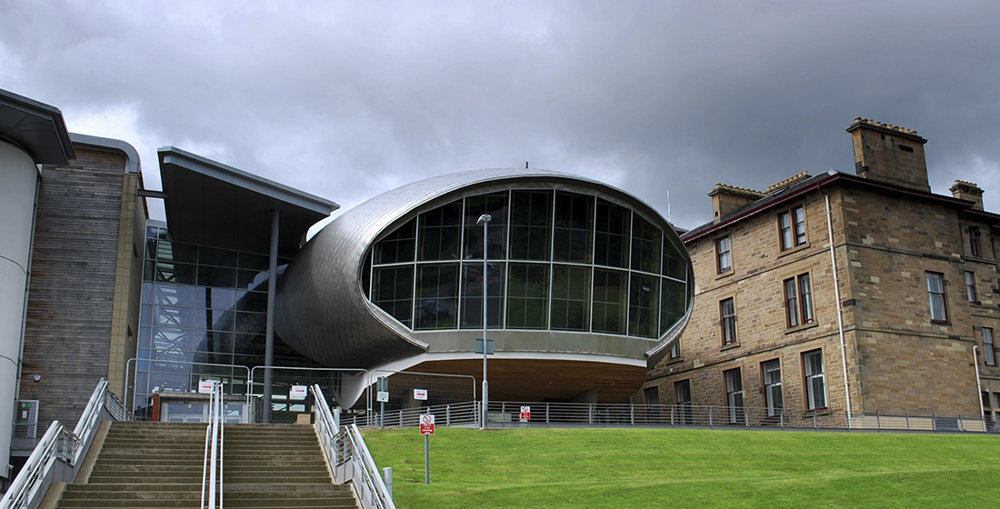
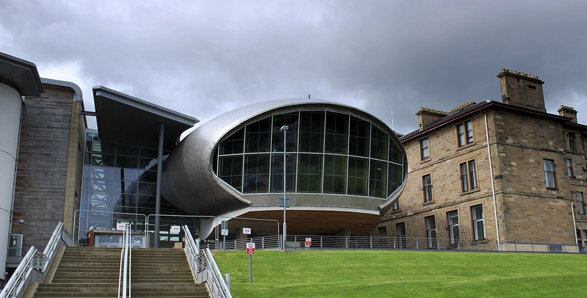

Study Abroad
Explore the World
KEA has formed partnership agreements with a large number of educational institutions in Europe and overseas. The European institutions are all certified under the ERASMUS charter and are available for study exchange for KEA's students.
Having passed the first-year exam, students can choose to complete either the entire programme or parts of it abroad. KEA offers multiple possibilities for international study, including the fourth semester internship.
According to the 7-point grading scale at the institution where the exam has been taken and is equivalent to a programme element in this curriculum, the grade may be transferred.
 

Here are a list of just some of the fantastic institutions available for Multimedia Design + Communication.